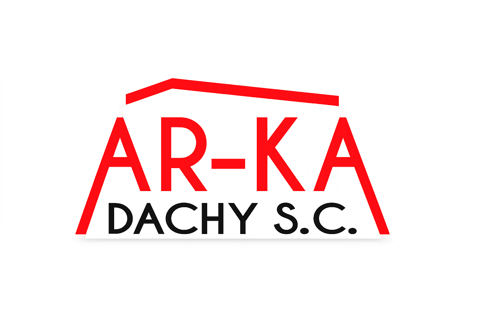
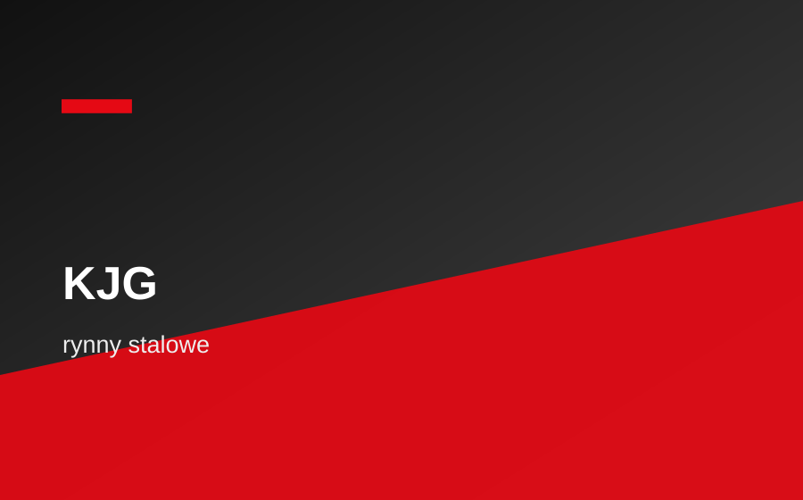
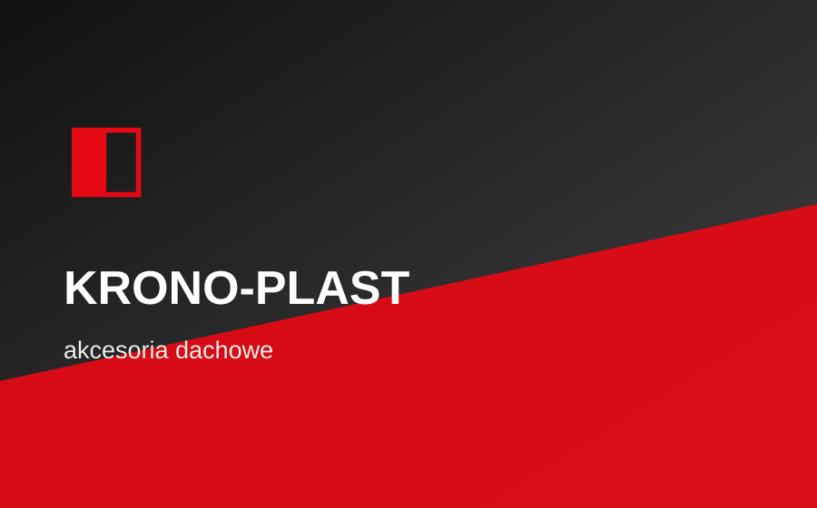

Pomiar i wycena
Najpierw ustalamy zakres, materiały i realny koszt prac.

Darmowa wycenaWykonujemy prace dekarskie, montujemy orynnowanie i pomagamy dobrać pokrycia, zamocowania oraz chemię budowlaną. Lokalnie, konkretnie i z pełną wyceną przed startem.
Najpierw ustalamy zakres, materiały i realny koszt prac.
Prace dekarskie, obróbki i rynny prowadzone jednym planem.
Dobieramy produkty pod dach, budżet i warunki na miejscu.
Jedlińsk, Radom i okolice - szybciej z dojazdem i decyzją.
Od konstrukcji i pokrycia po detale, które decydują o szczelności dachu.
Solidne konstrukcje dachowe z dopasowaniem do projektu i pokrycia.
Blacha, dachówka, panele i akcesoria dobrane do budynku.
Okap, kosze, kominy, pasy i detale wykonane szczelnie oraz estetycznie.
Naprawa, modernizacja i wymiana pokrycia bez niepotrzebnej zwłoki.
Montaż i uszczelnianie okien z dopracowanym odprowadzeniem wody.
Dobór i montaż systemu rynnowego z kontrolą spadków i szczelności.
Wykonujemy montaż i wymianę systemów rynnowych PVC oraz stalowych. Dobieramy średnice, elementy i sposób prowadzenia odpływu pod konkretną połać oraz układ budynku.
Każda marka ma bezpośredni odnośnik do oficjalnego katalogu, materiałów do pobrania albo strony produktowej producenta.
Pokrycia dachowe.
Otwórz katalogBlachy dachowe.
Otwórz katalogPokrycia dachowe.
Otwórz katalogSystemy rynnowe PVC.
Otwórz katalog
Rynny stalowe.
Otwórz katalogNarzędzia i BHP.
Otwórz katalogWkręty i zamocowania.
Otwórz katalogKleje i uszczelniacze.
Otwórz katalogIzolacje i akcesoria.
Otwórz katalog
Akcesoria dachowe.
Otwórz katalogWybierz markę lub temat i przejdź bezpośrednio do oficjalnego katalogu PDF albo strony produktowej producenta. Linki otwierają się w nowej karcie.
Bezpośrednio do katalogu odzieży ochronnej, rękawic, okularów, kasków i akcesoriów BHP.
Otwórz katalogNarzędzia ręczne i warsztatowe: młotki, klucze, miary, poziomice, szczypce i wyposażenie.
Otwórz katalogElektronarzędzia, sprzęt akumulatorowy oraz urządzenia do prac budowlanych i montażowych.
Otwórz katalogOsprzęt do elektronarzędzi: bity, wiertła, tarcze, brzeszczoty, koronki i akcesoria.
Otwórz katalogOficjalne katalogi wkrętów, zamocowań mechanicznych, chemicznych i rozwiązań montażowych.
Otwórz katalogOficjalna strona produktowa pian, klejów, uszczelniaczy i chemii budowlanej Soudal.
Otwórz katalogInternetowy katalog pokryć dachowych, blach trapezowych, elewacji i obróbek Polstal.
Otwórz katalogOficjalna strona Florian Centrum z aktualnymi katalogami, ulotkami i plikami do pobrania.
Otwórz katalogOficjalna strona z folderami i katalogami produktów Blachotrapez do pobrania.
Otwórz katalogOficjalna strona z katalogami i materiałami do pobrania dla systemów rynnowych Bryza.
Otwórz katalogOficjalna strona KJG z katalogami do pobrania dla rynien, pokryć dachowych i akcesoriów.
Otwórz katalogOficjalny katalog PDF Gunnex z izolacjami, geosyntetykami i akcesoriami budowlanymi.
Otwórz katalogOficjalna strona do pobrania z katalogami, cennikami i akcesoriami dachowymi Krono-Plast.
Otwórz katalogBrak wyników dla wybranych filtrów.
Zadzwoń i zapytaj o usługę, dostępność produktów albo wycenę kompletnego zestawu materiałów.